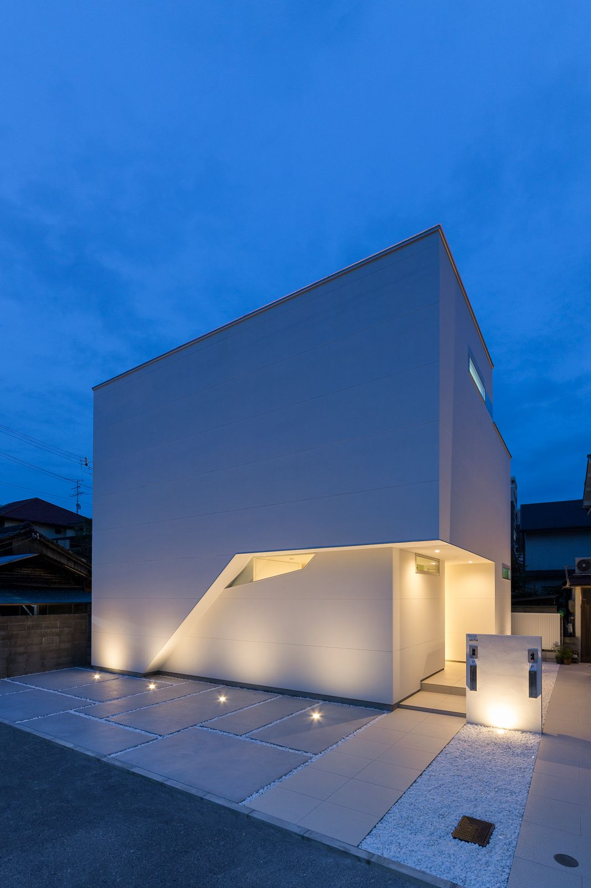
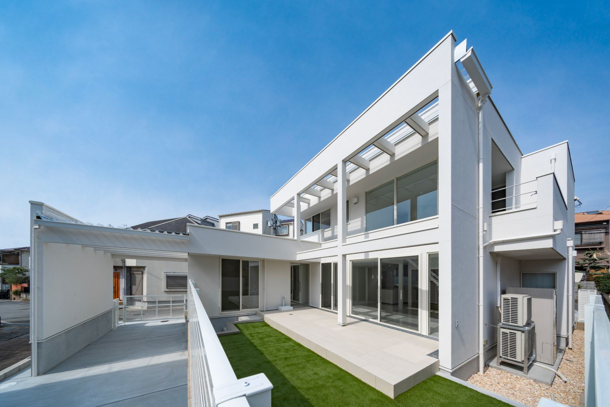
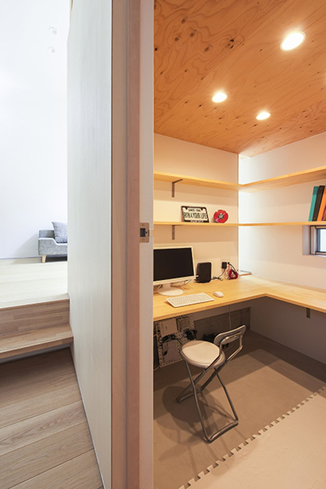
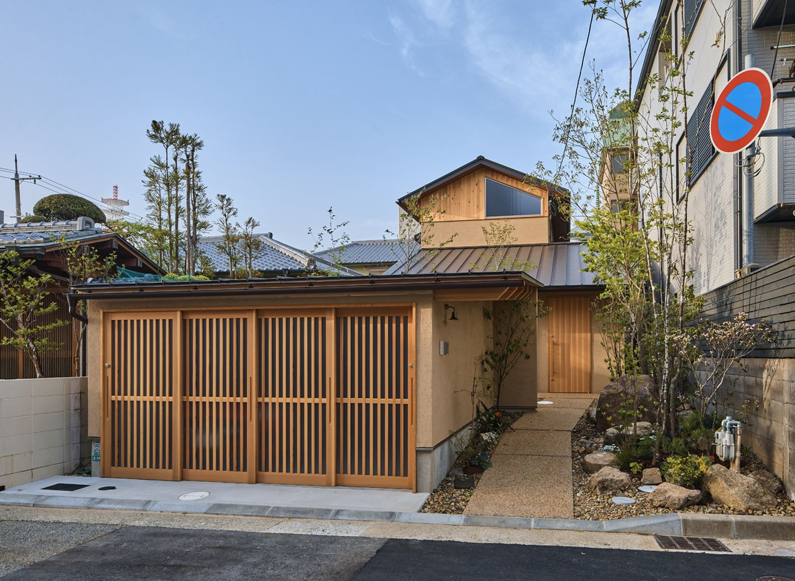
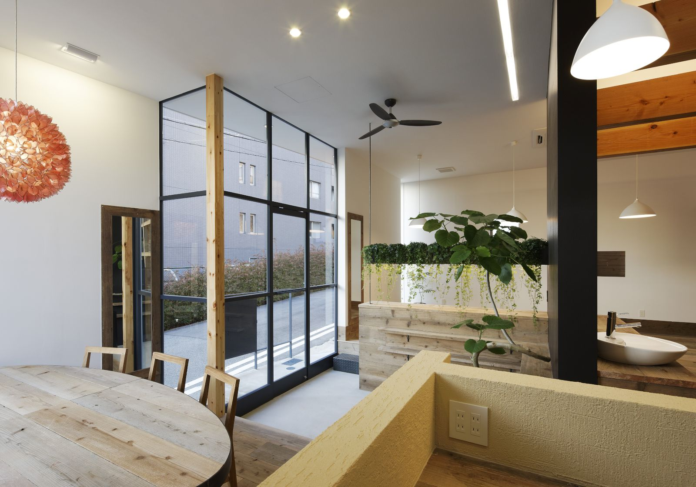
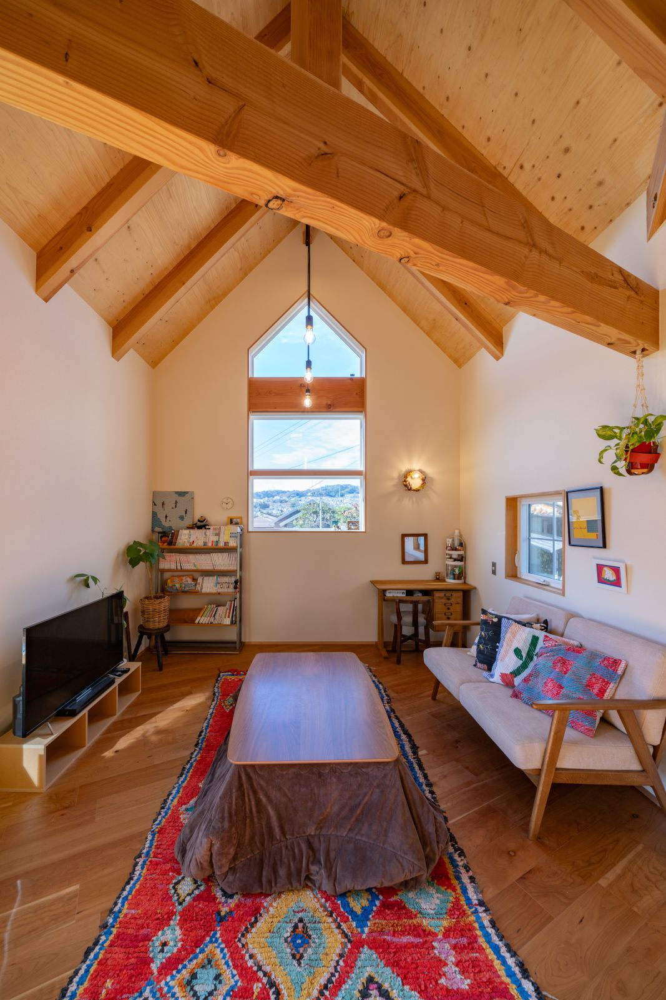
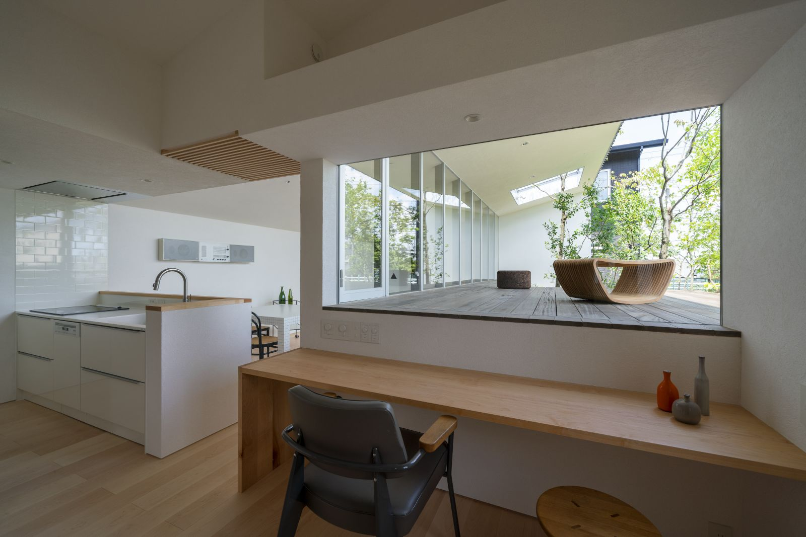
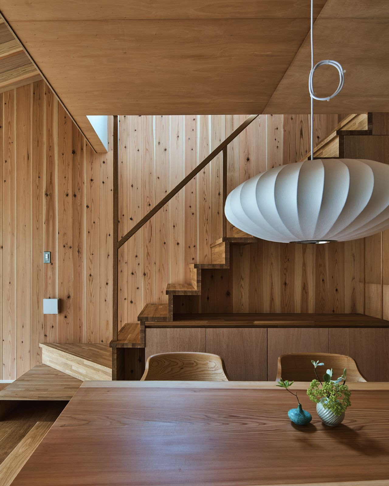

Your Coordinator

谷 小枝（家づくりコーディネーター）
「私は特定の建築会社を勧めることはありません。
あなたの家族にとって、何が最善かを一緒に考え抜くこと。
それが私の仕事です。」
家づづりの失敗のほとんどは、知識不足ではなく
相談相手の選び間違いから起きています。
コーディネーターは、あなたの側に立つ唯一の専門家です。
LINE登録で【家づくり自己チェックシート】を無料プレゼント！
LINE友だち追加で「家づくり自己チェックシート」をプレゼント
私たちは「素敵な家をつくれる」建築家・工務店しか紹介しません。
その基準を、まずこの実績でご確認ください。








各項目をタップすると詳しい内容をご覧いただけます。
資金計画をサポートできます
土地探しをサポートできます
建築家探し・設計のアドバイスができます
工務店の選び方をサポートできます
アウターメンテナンスのアドバイスができます
Your Coordinator
谷 小枝（家づくりコーディネーター）
「私は特定の建築会社を勧めることはありません。
あなたの家族にとって、何が最善かを一緒に考え抜くこと。
それが私の仕事です。」
LINE登録で無料プレゼント
LINE友だち追加で
「家づくり自己チェックシート」
を無料でお届けします。
① 住宅予算セルフチェックシート
手取り月収や年齢から、将来を考えた「返せる額」を自動計算します。
② 間取り判断チェックリスト
設計図をもらった際、後悔しないために確認すべき7つのポイントを凝縮。
③ 家づくりの判断基準要約カード
「誰と建てるか」より前に大切な「家づくりの順番」をカード化しました。
④ 家づくり生活チェックシート
家族全員で記入して、今の住まいへの不満や新居への夢を整理できます。
⑤ 総予算計画書テンプレート
建物代以外にかかる外構、諸費用、家具家電など。家づくりの「全費用」を管理できます。
すべての資料は建築家ネットワーク・ナビオリジナル資料です。LINE登録後にお届けします。
※LINEアプリが開きます｜無理な勧誘は一切ありません
谷 小枝
家づくりコーディネーター